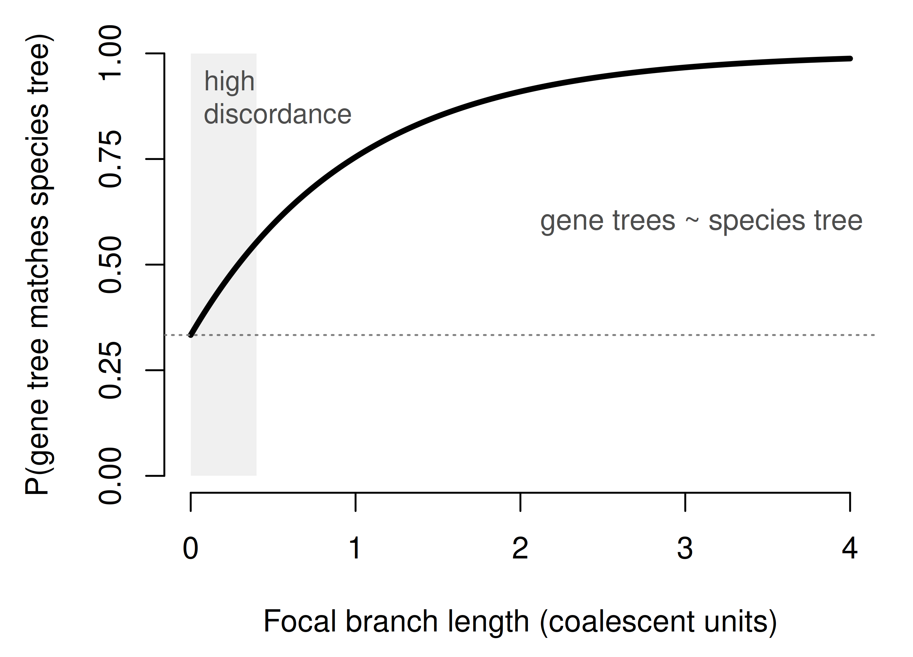

Chapter 7 Gene trees and species trees
So far we have gone to great lengths to understand the evolution of single genome regions. Implicitly, we have treated the phylogenies of genes as though they were the phylogenies of the species that carry them. This is a common and often useful simplification, but it is often not correct. In this chapter we will examine the distinction between gene trees and species trees, and the biological processes that can make gene trees disagree with each other and with the species tree.
Gene trees can disagree due to estimation error. Any tree we infer from a finite stretch of sequence is uncertain, and two genes can appear to disagree simply because we have estimated each of them imperfectly. This in part motivated the evaluation methods we already discussed (Chapter 6). But gene trees can also disagree because the histories of different genome regions are genuinely different (Maddison 1997). This discordance is the expected outcome of ordinary biological processes acting on real populations and real genomes. A gene tree that disagrees with the species tree can be right about its own history, and quite distinct from the history of the species that carry it. While estimation error shrinks as we collect more data per gene, true discordance does not. It is a property of the history itself.
7.1 Gene trees, species trees, and real discordance
Maddison (1997) provided the framing of gene tree discordance that serves as the foundation for this chapter. Picture the species tree not as a set of thin lines but as a set of tubes, each tube a population extended through time that branches as species split. The history of any particular gene is a gene tree that runs inside these tubes. Sometimes a gene tree follows the shape of its tubes and matches the species tree exactly; sometimes it does not.
Several distinct biological processes can lead gene trees to be discordant with each other and the species tree:
Incomplete lineage sorting, in which ancestral variation persists across successive speciation events and sorts among descendants in a way that does not track the order of speciation. This is the domain of the multispecies coalescent.
Gene duplication and loss, in which a genome region is copied within a genome or deleted, so that the history of the region includes events that the species tree does not.
Introgression, hybridization, and horizontal transfer, in which genetic material moves between lineages that have already diverged, so that a region’s history is genuinely reticulate rather than tree-like.
7.2 Incomplete lineage sorting
The process behind incomplete lineage sorting is most naturally described backward in time. Let us consider the process on an example gene tree and species tree (Figure 7.1), knowing that what we learn in this context generalizes. Here we follow a gene sampled in three different species, A, B, and C, back through their ancestral populations. Looking backward, gene lineages coalesce when they find a common ancestor. Coalescence between genes sampled from different species will always occur before the species split; the question is how long before. The two lineages first have the chance to coalesce along the branch subtending the speciation, which we will call the focal branch. But they could coalesce deeper in the tree.
There are three possible outcomes to consider (Figure 7.1):
- The A and B lineages coalesce along the focal branch (complete lineage sorting). The gene tree is concordant with the species tree.
- The A and B lineages fail to coalesce along the focal branch (incomplete lineage sorting), but in the ancestral population A and B are still the first pair to coalesce. The gene tree is concordant with the species tree.
- The A and B lineages fail to coalesce along the focal branch (incomplete lineage sorting), and instead A or B coalesces first with C. The gene tree is discordant with the species tree.
The first two outcomes give a gene tree that matches the species tree; only the third produces discordance. We can calculate the probabilities of these outcomes with the multispecies coalescent model.
![The three possible outcomes for a single gene sampled in species A, B, and C, whose species tree is ((A,B),C). Gene lineages (black) evolve within the species tree (gray tubes); the focal branch is the branch ancestral to the A--B speciation, where the A and B lineages first have the chance to coalesce. Outcome 1: the A and B lineages coalesce along the focal branch (complete lineage sorting), giving the concordant gene tree ((A,B),C). Outcome 2: the lineages pass through the focal branch without coalescing (deep coalescence), but A and B are still the first pair to coalesce in the ancestral population, again giving the concordant ((A,B),C). Outcome 3: after the same deep coalescence, B instead coalesces with C first, giving the discordant gene tree ((B,C),A).](phylogenetic_biology_files/figure-html/gst-coalescent-1.png)
Figure 7.1: The three possible outcomes for a single gene sampled in species A, B, and C, whose species tree is ((A,B),C). Gene lineages (black) evolve within the species tree (gray tubes); the focal branch is the branch ancestral to the A–B speciation, where the A and B lineages first have the chance to coalesce. Outcome 1: the A and B lineages coalesce along the focal branch (complete lineage sorting), giving the concordant gene tree ((A,B),C). Outcome 2: the lineages pass through the focal branch without coalescing (deep coalescence), but A and B are still the first pair to coalesce in the ancestral population, again giving the concordant ((A,B),C). Outcome 3: after the same deep coalescence, B instead coalesces with C first, giving the discordant gene tree ((B,C),A).
The effective population size \(N_e\) is the number of diploid individuals in an idealized population. Since diploid individuals each carry two copies of each gene, the total number of gene copies in a population of \(N_e\) diploids is \(2N_e\). Given a particular gene sampled from the population, the probability that it coalesces with another particular gene in the previous generation is \(1/(2N_e)\). From this, we can derive that the expected time back to the most recent common ancestor of any two copies of a gene sampled from the population is \(2N_e\) generations. The larger the effective population size, the longer we expect it to take for lineages to coalesce.
Since generation times and \(N_e\) can vary widely across species, branch lengths are often normalized to coalescent units.
\[\begin{equation} \tau = \frac{t}{2N_e} \tag{7.1} \end{equation}\]
A branch length of \(\tau=1\) coalescent unit is the expected time for two lineages to coalesce within a population.
As in our analyses of sequence evolution, we would like to have probabilities, not just expectations. The probability that two copies of a gene sampled from a population fail to coalesce along a branch of length \(\tau\) is:
\[\begin{equation} P(\text{fail to coalesce}) = e^{-\tau} \tag{7.2} \end{equation}\]
Note that the exponent contains a negative sign, so the probability of failure to coalesce decreases as the branch length increases. Equivalently, the probability of coalescence increases as the branch length increases. This makes sense. The more time two lineages spend together in a population, the more likely they are to coalesce.
Equation (7.2) gives the probability that outcome 2 or outcome 3 occurs. To split that probability between these two outcomes, we need a short combinatorial assessment. When A and B fail to coalesce, all three lineages enter the ancestral population together, and the first coalescence there is equally likely to join any of the three pairs: A with B, A with C, or B with C. Only one of these, A with B, matches the species tree. So, given that A and B failed to coalesce along the focal branch, the gene tree is concordant with probability \(1/3\) and discordant with probability \(2/3\).
Multiplying the probability of failing to coalesce by the probability of a discordant resolution gives the overall probability of a discordant gene tree (outcome 3),
\[\begin{equation} P(\text{discordant}) = \frac{2}{3}\,e^{-\tau} \tag{7.3} \end{equation}\]
Since the probabilities sum to 1, the probability that the gene tree matches the species tree (outcomes 1 or 2) is one minus this,
\[\begin{equation} P(\text{concordant}) = 1 - \frac{2}{3}\,e^{-\tau}. \tag{7.4} \end{equation}\]
Equation (7.4) is plotted in Figure 7.2: the match probability is \(1/3\) when the focal branch is vanishingly short (\(\tau \to 0\)), no better than choosing a topology at random, and rises toward one as the branch lengthens.

Figure 7.2: The probability that the gene tree matches the species tree rises as the focal branch lengthens (in coalescent units). A short focal branch, as at the base of a rapid radiation, leaves a wide zone of frequent discordance; a long one leaves gene trees essentially concordant.
Although we worked this out for a single focal branch in a three-species tree, the same logic applies to every internal branch of any species tree: the shorter a branch is in coalescent units, the more its gene trees disagree with the species tree. Incomplete lineage sorting is therefore a serious concern wherever internal branches are short—rapid radiations, recent and closely spaced speciation events, and species with large effective population sizes—and negligible where internal branches are long.
Two broad families of coalescent-aware phylogenetic methods, which model and accommodate the multispecies coalescent, are in wide use:
Summary, or two-step, methods. Estimate a gene tree for each region, then estimate the species tree from the distribution of gene trees under the multispecies coalescent. ASTRAL is the most widely used method of this kind (Zhang et al. 2018); it is statistically consistent under the coalescent and scales to genome-wide datasets.
Co-estimation and site-based methods. Full-likelihood approaches such as *BEAST co-estimate gene trees and the species tree together in a single Bayesian analysis (Heled and Drummond 2010), which is powerful but computationally demanding. Site-based methods such as SVDquartets work directly from the sequence patterns under the coalescent without first estimating gene trees (Chifman and Kubatko 2014).
Edwards (2009) is a good general treatment of species-tree inference under the coalescent.
7.3 Gene duplication and loss
Genome regions are duplicated and lost throughout evolution, and as a result most genes are members of gene families: sets of homologous genes within and across genomes that trace back to a history of duplication and differentiation.
This is where the familiar vocabulary of orthology and paralogy comes in. Two gene copies are orthologs if their most recent common ancestor immediately precedes a speciation event, and paralogs if it precedes a duplication event. The distinction matters in part because our strategy of using genes as proxies for species assumes we are comparing orthologs: copies whose divergence tracks the divergence of species. Compare paralogs by mistake and the gene tree can depart drastically from the species tree.
![How duplication and loss can make single-copy genes mislead. Left: the species tree, ((A,B),C). Middle: a gene family tree in which an early duplication (D) produced two copies; within each copy divergences track speciation, so each copy on its own recapitulates the species tree. Reciprocal loss (dashed gray lineages, marked X) then removes B and C from the first copy and A from the second, leaving exactly one surviving copy in each species: A1, B2, and C2. Right: these survivors look like ordinary single-copy genes, but A1 is a paralog of B2 and C2, so the tree they support is (A,(B,C))---B groups with C, conflicting with the species tree. This hidden paralogy is invisible unless the full gene family history is reconstructed.](phylogenetic_biology_files/figure-html/gst-reconciliation-1.png)
Figure 7.3: How duplication and loss can make single-copy genes mislead. Left: the species tree, ((A,B),C). Middle: a gene family tree in which an early duplication (D) produced two copies; within each copy divergences track speciation, so each copy on its own recapitulates the species tree. Reciprocal loss (dashed gray lineages, marked X) then removes B and C from the first copy and A from the second, leaving exactly one surviving copy in each species: A1, B2, and C2. Right: these survivors look like ordinary single-copy genes, but A1 is a paralog of B2 and C2, so the tree they support is (A,(B,C))—B groups with C, conflicting with the species tree. This hidden paralogy is invisible unless the full gene family history is reconstructed.
It is tempting to restrict phylogenetic analyses of species to single-copy orthologs: regions that are present in exactly one copy in every species, with a clean one-to-one correspondence and no duplication or loss to worry about. Though many analyses attempt to approximate this, single-copy orthologs are exceedingly rare in practice. When sampling thousands of genes from even a moderately sized phylogeny of a few dozen species, there may only be a handful of genes that occur as no more than one copy in any species. The biological motivation for excluding genes with any duplication or loss is also less compelling than it may seem at first glance. Duplication and loss are pervasive features of genome evolution; a gene that has remained single copy across a whole clade for hundreds of millions of years may be unusual in ways (strong constraint, dosage sensitivity) that make it a biased sample of the genome.
A more general response is to treat the labels ortholog and paralog as summaries of something richer: an explicit, reconstructed history of duplication and loss (Dunn and Munro 2016). Rather than sorting pairs of genes into two bins (strict orthologs and others), we can infer the full gene family tree and map it onto the species tree, a procedure called reconciliation (Szöllősi et al. 2015; Chen et al. 2000). Reconciliation places each duplication and loss event on the species tree and, in doing so, tells us which copies are orthologs, which are paralogs, and exactly why (Figure 7.3). Orthology and paralogy fall out as consequences of the history rather than serving as the primitive concepts.
Methods that consider gene duplication and loss can reduce inference problems and also let us discard fewer data (since we can relax our gene selection criteria to include genes with more complex histories). Tools that identify gene families and infer their histories, such as OrthoFinder (Emms and Kelly 2019), make the full complement of gene families available for analysis, and methods such as ASTRAL-Pro estimate the species tree directly from multi-copy gene family trees, accounting for paralogy instead of requiring it to be filtered away first (Zhang et al. 2020). Many studies include genes with more than one copy per species without full reconciliation, using simpler approaches such as pruning some copies from gene trees before species tree inference, based on gene tree structure or branch lengths.
7.4 Reticulation: introgression, hybridization, and horizontal transfer
The coalescent and gene duplication and loss both take the branching of the species tree for granted: lineages, once split, are assumed to stay split, and discordance arises only from how genes sort or duplicate within that fixed history. Reticulation breaks that assumption. Lineages that have already diverged come back into genetic contact and exchange material, so the history of the organisms is no longer a tree but a network, with branches that merge as well as split.
Hybridization and introgression are two outcomes of the same underlying event—interbreeding between diverged but still cross-fertile lineages—that differ in scale and consequence. Hybridization is the cross itself, and in its most dramatic form it founds a new lineage whose genome is a balanced mosaic of both parents (a homoploid hybrid) or a doubled complement of both parental genomes (an allopolyploid, a common route to new species in plants). Such a hybrid lineage descends from two branches of the species tree, a merger of two lineages. Introgression is the subtler and more common result: when hybrids backcross repeatedly into one of the parental populations, a minority of one lineage’s genome leaks into the other while both species persist largely intact. The recipient remains recognizably itself but carries some regions inherited from the donor. Introgression therefore touches only part of the genome, so it is usually detected from genome-wide asymmetries in shared variation rather than from any single locus.
Horizontal, or lateral, gene transfer moves genetic material between lineages outside of reproductive processes. Rather than passing from parent to offspring, a gene is taken up directly, carried by a plasmid, a virus, or environmental DNA, and inserted into another genome. Because this requires neither interbreeding nor close relationship, horizontal transfer can move a gene between very distantly related organisms, and it is pervasive among prokaryotes. A transferred gene has a history that leaps across the tree, resembling neither the recipient’s close relatives nor a pattern of incomplete lineage sorting.
All three processes produce reticulate histories that no single tree can fully capture, and phylogenetic networks generalize trees to represent them (Solís-Lemus et al. 2017).
7.5 Conclusion
We have examined biological processes that can lead gene trees to depart from each other and from the species tree, methods that model these processes, and approaches to addressing discordance. This is one of the most active areas of phylogenetic research, and there is considerable ongoing development and consideration of the best approaches for particular problems.
Many analyses do not attempt to model discordance at all, and treat all regions as though they share one history. One of the most common such approaches is to concatenate all the gene alignments end to end into one supermatrix and infer a single tree. There are a few reasons this is still a common approach. In practical terms, it often gives the same answer as methods that explicitly accommodate discordance, and it is computationally simpler. In some cases, the biology of the problem may make discordance unlikely. Another concern is that methods that accommodate discordance have many more parameters, and data may be too limited to support the more complex models. In practice, it is common for studies to take multiple approaches and compare the results. Understanding where the methods agree and where they disagree can be informative about the biology of the group and the structure of the problem, and can help identify additional approaches that may be needed to understand the problem.
Real discordance can have multiple causes. Methods have been developed to explicitly model and address each. In reality, the specific processes that cause any particular discordance may be non-identifiable, and the best we can do is to use methods that are robust to multiple causes. The coalescent is a good example: it models one cause of discordance, but it may be able to essentially soak up other causes such as gene duplication and loss. Just because a method detects discordance doesn’t mean the discordance is due to the process it models.
We should expect that different processes tend to dominate in different parts of the tree of life, and that the biology of the group and structure of the phylogenetic problem should inform the choice of method. As we have seen, incomplete lineage sorting is more likely on shorter branches and in larger populations. Given that shorter branches tend to be sampled in recent divergences, this is a particular concern at shallower depths in the tree. Incongruence due to gene duplication and loss is most likely when longer times have elapsed along the branches of the species tree. This is a particular concern for deeper phylogenetic problems, such as those regarding relationships from hundreds of millions of years ago.
Gene tree/species tree discordance is one of those phylogenetic patterns that is often treated as a technical nuisance to be overcome in the quest to resolve species relationships. But it is also a rich area of biology that is clearly relevant, and often central, to the larger evolutionary questions that are leading us to infer phylogenies in the first place. Incomplete lineage sorting tells us how population-level processes give rise to macroevolutionary patterns. Gene duplication and loss is central to the evolution of genome novelty and complexity. Introgression and hybridization are central to understanding the evolution of many groups, including humans. As the field develops these processes will be treated less as nuisances to be overcome, and more as important biological phenomena to be sought out and understood.